After having made his 1st million online
from his communication business, this Ilorin-born madrasah boy now reflects..
Meet Abu Zayd..
How his story has changed, from someone:
Who once watched his 6-year old madrasah girl, Sumayyah, wonder which school did her Ustadh attend for him to have blown such unimaginable blunder while questioning her:
"Why did you cAme late?"
to an internationally acclaimed fluency guy:
Who now makes convenient 6 figures in a month by
teaching people fluency over which Sumayyah has
criticised him back in the days.
Now, the Ilorin-born-and-raised Abu Zayd shares with you
exactly what he did and
how you too should do the same
and start
packing the internet cash
from the comfort of your smartphone
with the power of
your English fluency...
That was exactly what transpired between me and Sumayyah while I was still an Arabic teacher at Usool madrasah in Agege Lagos.
But I didn't just blow the blunder and ended it there. No! I went as far as arguing with my 6-year girl, Sumayyah, turning in all my energy to drive home my point that I was absolutely correct!
I remember asking Sumayyah to prove it to me that "why did you cAme late" was wrong, or was that not a past tense?
She says she can't prove it but all she knows is that English is not spoken that way.
But..
Won't Sumayyah be blown away
if she finds out that now my
earnings from fluency has
sponsored my trip to
this Arab land and I
have not just been
offered a job at
the biggest English
institute without any
certificate or CV..?
But also I've been perceived to be of the best if not the overall best instructor despite having white instructors at the institute who also speak the native English accent.
Hope I wouldn't break your heart were I to tell you I had to call the job quits when I realised their was free mixing at the centre.
I believe it would be very dangerous for a young man like myself to start mingling with white girls under the guise of "I'm their fluency go-to guy.."
Hence, Islam forbids such intermingling.
Then boom!
When I came back online with greater vigour, I had made my supposed second month salary at the centre
in just 3 days...
But what action did I take to land myself all these internet goodies?
Switching from one stream of income to another..
Well, I decided to learn how to speak exactly like a native English speaker.
This actually means speaking the English language flawlessly in a way that makes people wonder if you're actually from the UK or the US.
"Is English your mother tongue?"
That was the exact question that I got from Jawwaad the first day we met during the last 10 days of Ramadhan.
Wait, you say 'pepperish?' 👇🏾
Jawwaad was born and raised in The US. We met at a village called The Mount Of The Camels after calling my job quits at the institute.
But how can you too achieve this for yourself and start making good earnings from it?
Relax a bit..
Let us start with what you don't
need to know before you can speak
exactly like a native English
speaker..
You don't have to go enrol at an elocution school where you'll be taught all those boring stuffs that can easily put you off.
This may take you by surprise but the truth is: you don't have to start learning the 44 or 45 consonant and vowels sounds.
You also do not need to start learning how to transcribe or do any boring stuff of that sort.
Learning what's mentioned in numbers 2 and 3 isn't a waste of time though but all I'm telling you is:
I was able to speak like a native English speaker to the amazement of my friends and acquaintances without knowing all of those freaking boring things.
So how do you now learn it in a well simplified manner without having to go through all those complex things?
Perhaps you're now considering buying a best selling fluency course on Udemy or even learn it free from YouTube?
Just a minute..
My experience buying such course on Udemy made me realise that these white instructors on Udemy don't deeply understand what it takes for an African to speak the English language exactly like a native.
So I later found out that those courses can't help a typical Nigerian achieve the kind of results we've been talking about all the while.
And this is where I shall be helping you.
I am Bello Kolawole Mustapha.
I'm a 7-figure fluency and
British accent coach and
the founder of Accentrium that
has been helping Nigeirans
speak exactly like a native Briton
since March 2021
even if they do not understand the basic rules of grammar.
Kindly hear directly from my student, Zaynab, how she's moved from speaking like a regular Nigeiran to speaking exactly like a Britain-born.
Perhaps you're not much interested in teaching people fluency to make money?
Teaching it to others is just one of the many ways to make money from which you can start milking money from your premium fluency.
You can equally use it to get any job of your dream or to attract high paying customers to your business.
I said high paying customers simply because of the first things people believe once you speak amazingly well is that:
• Oh, this guy is so smart and intelligent
• He's financially okay
• He's highly skilled
• He's got the connections
• He should be living in an elite community, Lekki, Banana Island and the likes
• Maybe he's lived abroad before
• He must have a lot of opportunities out there. So let's sign the deal with him before someone else snatches him away from us.
Thoughts like these rush to us naturally. Hence this is what you too will think when you hear someone speak the English language exactly like a native.
The thought naturally drops in your head that the speaker is just well-off.
Exactly what people will begin to think of you too and which will allow you to charge them whatever amount you want from them whenever they're hiring you.
Here's another student of mine, Abdullah Fawzaan, a madrasah boy like myself who achieved the same result in roughly a month and how his new mode of speaking has been drawing people to his business..
For you to achieve this without having to go through those boring things that I mentioned earlier,
I've prepared a kit for you called
"My Ultimate Fluency Kit"
which has been working wonders
for those who made a purchase of it.
A lot of people are now talking about this kit 👇🏽
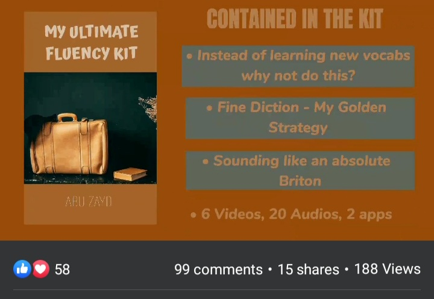
Ummu Mahmudah was of those who got the kit early on..
Kindly hear directly from Ummu Mahmudah about her experience with the kit 👇🏾
The kit was a life changer for Ibrahim..
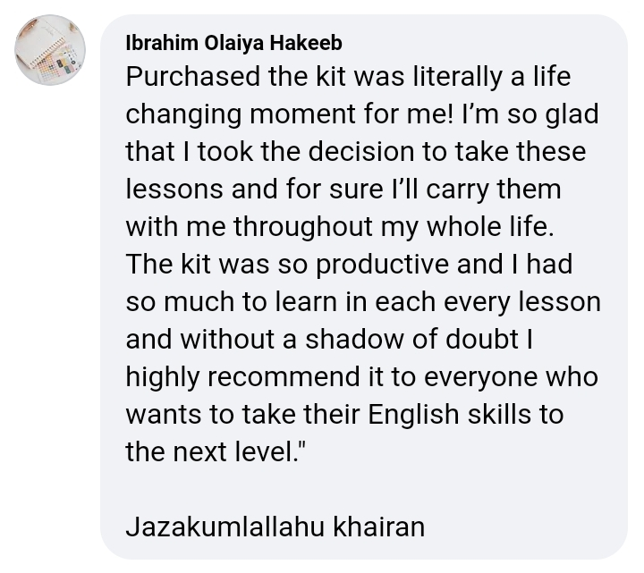
And puts a smile on Barokah's face.
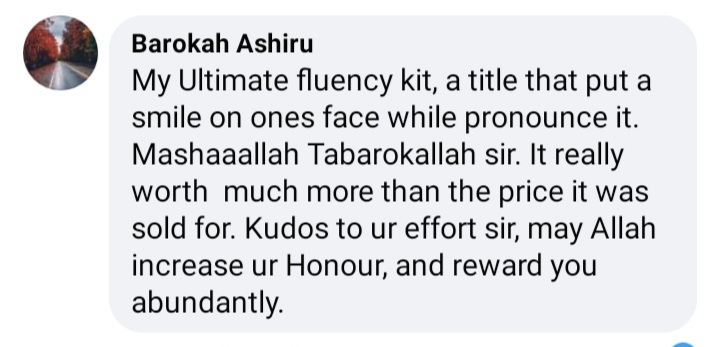
Now she speaks without everyone knowing she's that Yoruba girl.
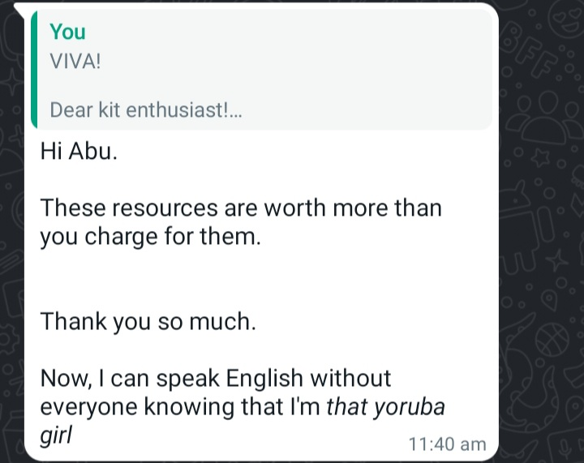
Abdullah Olakunle finds it so simplified..
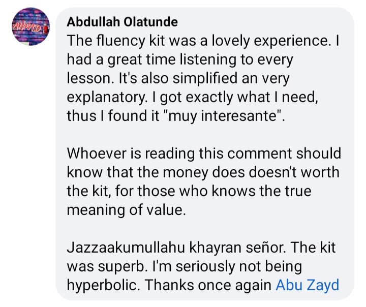
Meant for all levels as observed by Ummul Khayr.
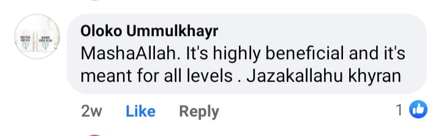
The kit is almost the best treasure Imam Mensch had ever found so far..
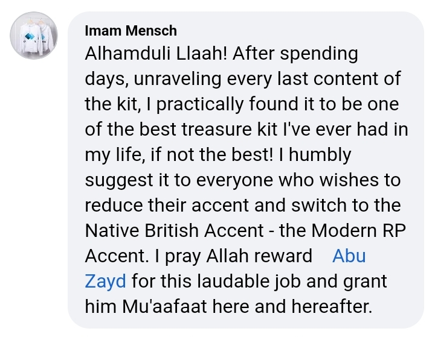
Goes beyond the price.
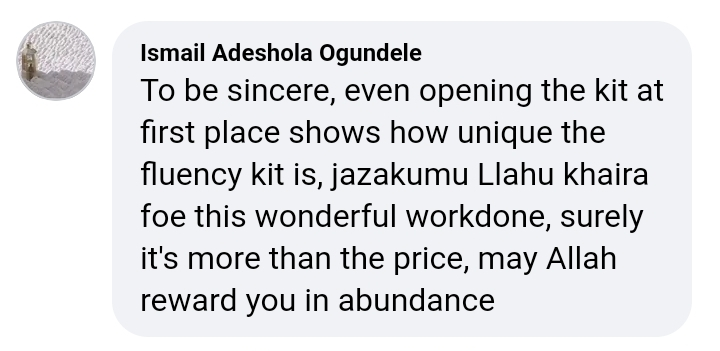
With the kid I've exposed them to my personal...
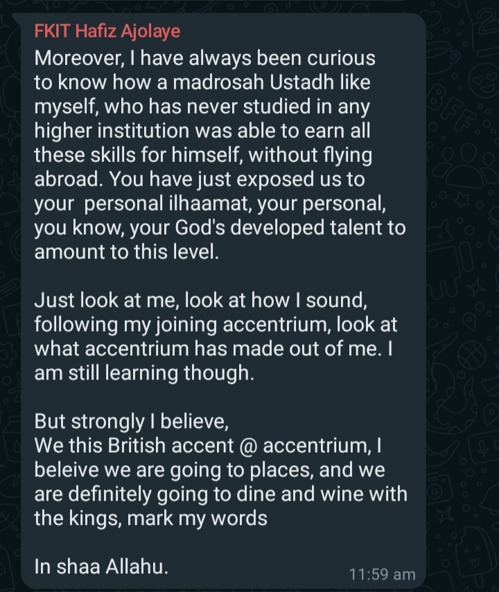
A lot will not realise the worth of this kit now.
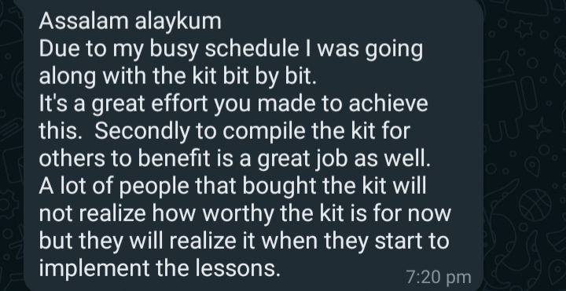
The fluency kit made Abdussomad enrol for almost all Accentrium courses..
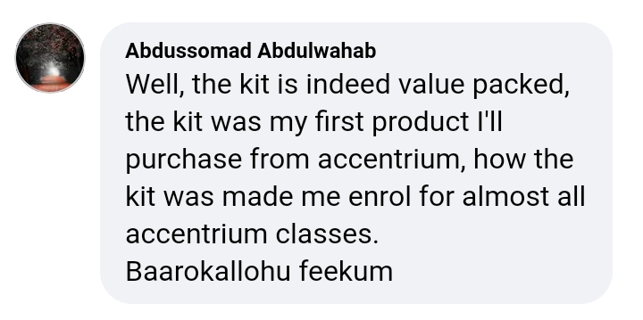
She gained a lot with regards grammer and pronunciation.
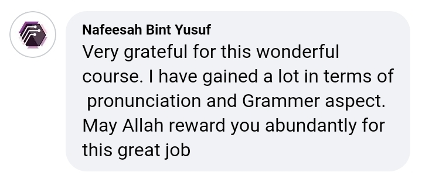
Aameen wafeeka, akhee..
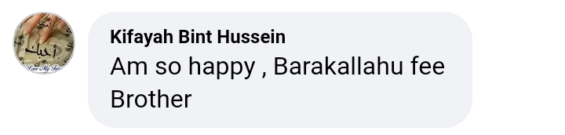
Just like a library.
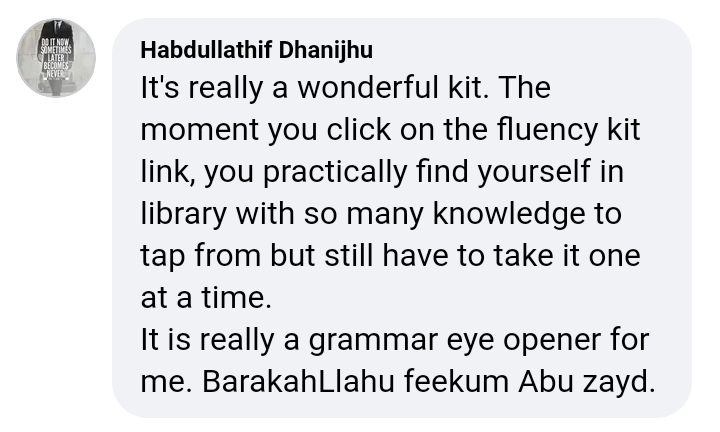
Had to buy for her freind too..
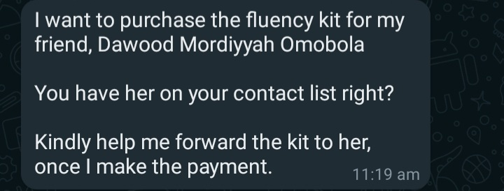
Had to tell her husband about the coach.
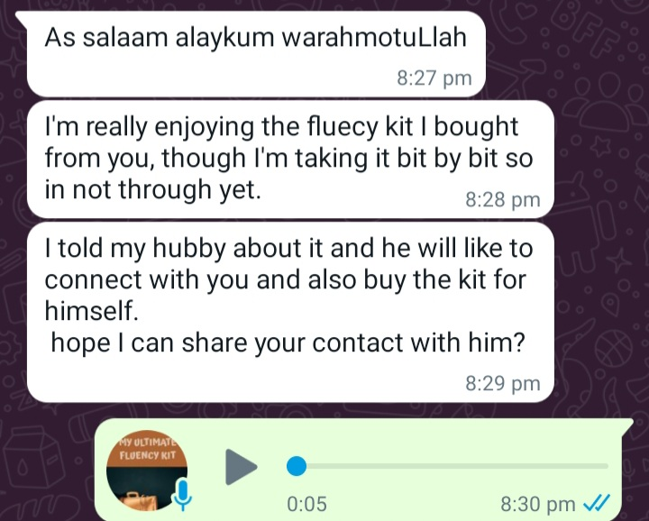
The kit was a life changer for Ruqoyyah.
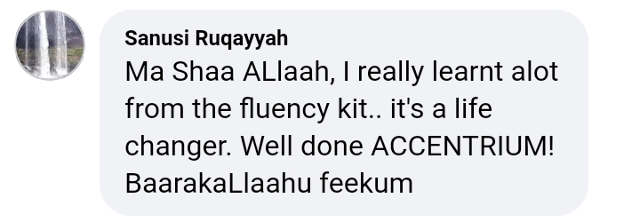
The fluency kit is giving him joy..
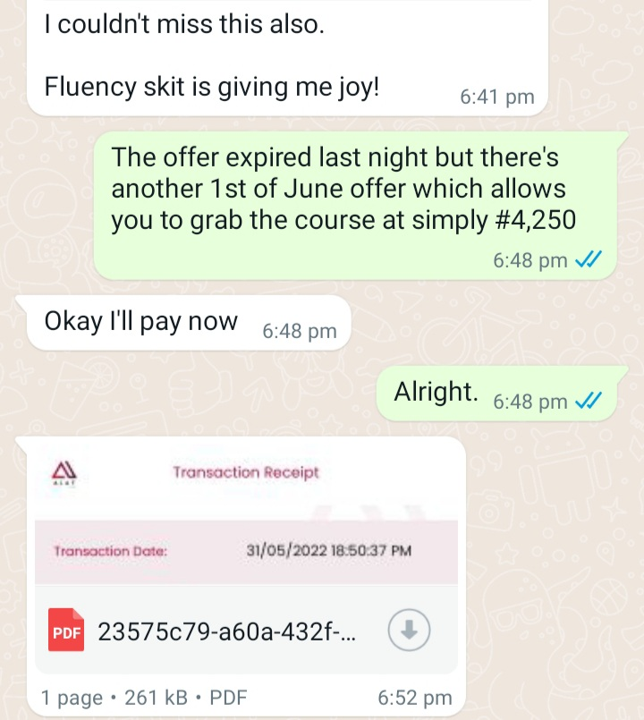
Surprised by the kit price.
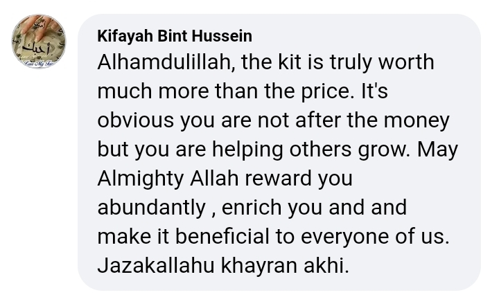
Never knew the kit contain publicing speaking drills.
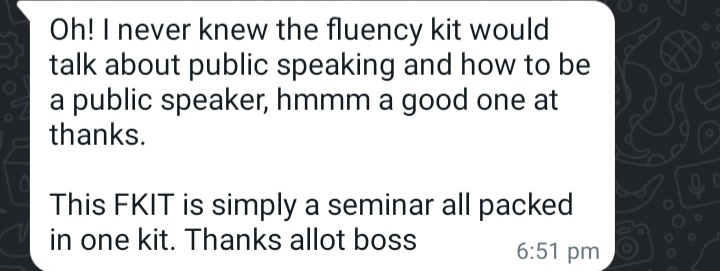
So simplified..
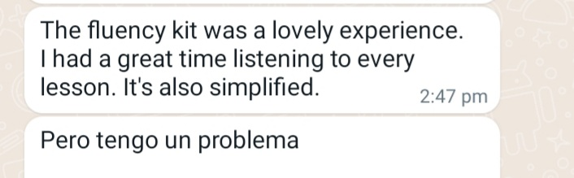
So what treasures will you be unraveling from this awesome kit?
Wait...
Once you lay your hands on this kit, kindly head to Folder 6. In that folder titled
1 Proven Strategy That Will Get You Better No Matter What!
This folder contains a single video in which I show you my screen so as to see clearly the secret strategy that I've been able to use to skyrocket my fluency which people now marvel at today.
I would have shown you what a student said particularly about the strategy and how she has been rocking it, but unfortunately the chat got wiped away with my old phone.
Another folder you should quickly go check out once you have your kit is folder 7 titled
"Fine Diction — My Golden Strategy"
There's just a single but amazing audio living and breathing in this folder which exposes you to how you can pick any native English accent be it American or British..
Even if you do not have anyone around you with whom you could practice.
So how much money do you think you need to invest to achieve all this and start milking money from it?
For a skill that is more profitable and earns you a great deal of respect even than most master's degrees will..
How much do you think it's worth?
I've got to tell you about my friend Sheriff who during his university days, when a doctor or professor would hold the microphone to address the students in the mosque..
The students would begin to walk out of the mosque.
But when my friend would hold the microphone in the masjid, the students would sit back and listen simply because they couldn't turn away from his eloquent tongue.
Just helping the elite to grace their occasion with the power of your fluency could earn you #200,000 to #300,000 as it once happened to my teacher back then in Osodi.
He was offered a #250,000 cheque by the elite organisers after his speech.
Yeah, it would have been a worthy investment if you've paid #100,000 for a golden access to this kit.
But you aren't paying anything close to this.
You shall be holding your copy of "The Ultimate Fluency Kit" with just a token of..
$10
And for my Nigeiran people, that's #7250 when converted to Naira.
That's cheap, right?
Well, I just love to see every willing soul like you to be able to afford it and get the sweet and profitable transformations from the kit.
Are you a willing soul?
Payment goes here..
7061862072
Bello Kolawole Mustapha
Opay Digital Services
After transacting successfully, do not forget to send your Proof Of Payment
to this WhatsApp number +234 706 186 2072
or just click on the button below 👇🏽
He snatched this from the kit.
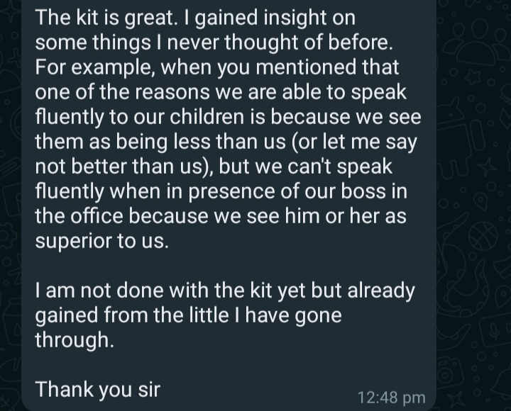
You can do other things while listening to the kit..
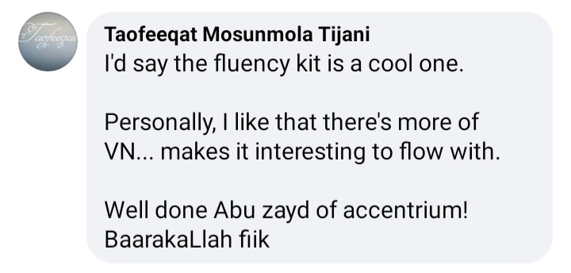
"A must have for those passionate about speaking with a difference.."
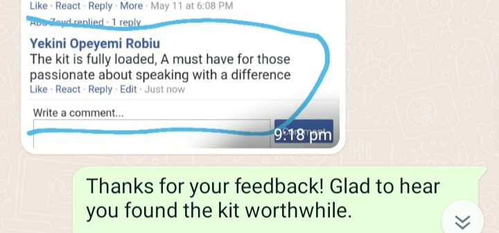
She has studied it twice and still not stopping there.